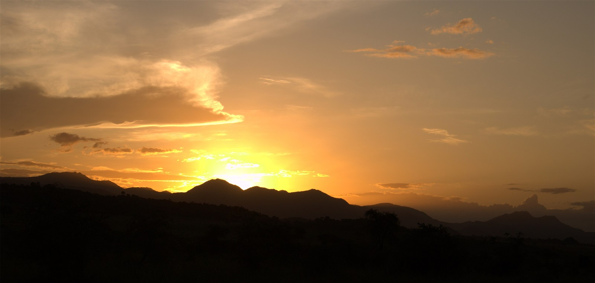
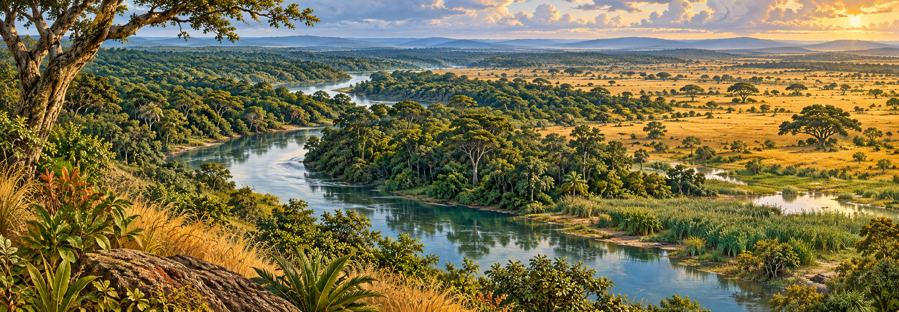
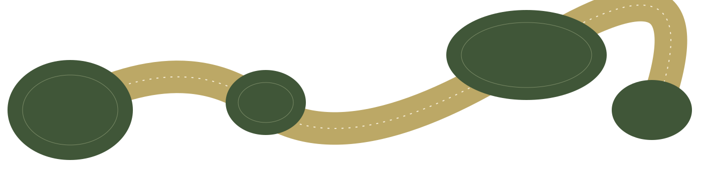

Riverine forest
Tall trees and a layered canopy beside the rivers.

The trees. The grasses. The lives between them.
Follow the landscape ↓Along the Nile and Ayago, riverine forest gives way to thicket, woodland and open grassland. In valley bottoms, wetlands hold another community of life.
These are neighbours in a mosaic. Each has its own structure, its own inhabitants.
Ayago field surveys · 2012–2013 ↗


Tall trees and a layered canopy beside the rivers.
Tree cover opens. Light reaches the ground.
Grasses dominate, with fewer trees overhead.
Fire, feeding and water can change which plants flourish—and which young trees survive.

Burning interacts with grasses, woody plants and the conditions in which they grow.
Grazing and browsing change vegetation. Their effects depend on the animals, plants and place.
Permanent water, seasonal flooding and drier ground support different communities.
The Ayago assessment describes observed burning and reviews earlier Murchison studies. It does not isolate the contribution of each cause. Parker’s historical essay describes animal-exclusion and burning plots at Chobe, but the plots had limited replication and excluded animals besides elephants.
Follow the historical evidence ↗A landscape can become more wooded without recovering the same community of species.
Historical accounts describe woody vegetation returning in parts of Murchison after heavy elephant losses. Later mapping around Ayago also records changing cover. Neither tells us, by itself, that every part of the living community has returned.
Parker · 2018 / Ayago · 2016 ↗
Which trees are growing?
Which seedlings survive?
Which lives are coming back?
The protected landscape does not stand alone.
A satellite study of the wider Murchison conservation area found vegetation patterns that varied with distance from its boundary. Forest, woodland and grassland responded differently.
Satellite greenness reveals a pattern. It does not count species or identify a single cause.
Fuda and colleagues · 2016 ↗Mapping recorded forest and woodland conversion around the reserve, particularly to its south. Later field observations also reported extraction inside the forest—changes a broad land-cover label can miss.
Mwavu & Witkowski · 2008 ↗A forest patch. A river margin. A stretch of woodland. The land between protected places matters too.

Researchers have modelled possible links across the northern Albertine Rift. A route that looks suitable for a chimpanzee is not necessarily suitable for a lion—or the smaller lives sharing the landscape.
A proposed corridor is a starting question:
Can life actually use this connection?
Look at the species. Look at the spaces between them.
Look at what is changing.
This account brings together field surveys, satellite studies and historical interpretation. Each describes a particular place and time.
WSS Services (U) Ltd, July 2016. Environmental and Social Impact Assessment Report for the 840MW Ayago Hydropower Project, Volume 1, final draft. Vegetation, fire and mammal results, printed pp.144–180; survey methods pp.43–58. Fieldwork mainly 2012–2013. Developer-commissioned assessment; mapped periods and classifications differ. The source does not establish current conditions or that proposed mitigation succeeded.
Ian S. C. Parker (2018), Uganda: elephants, people and fire in Murchison Falls National Park and north Bunyoro district, Pachyderm 59:91–96. Historical synthesis, recollections and cited earlier studies. Tree-cover recovery is distinguished from biological-community recovery. The original Chobe trial publication has not been independently read for this account.
Pachyderm journal ↗Fuda and colleagues (2016), Assessing impacts to primary productivity at the park edge in Murchison Falls Conservation Area, Uganda, Ecosphere 7:e01486, pp.3–12. NDVI images, 2001–2013, at 250m resolution. Greenness is a proxy; proposed drivers were not experimentally tested.
Read the paper ↗Mwavu & Witkowski (2008), Land-use and cover changes (1988–2002) around Budongo Forest Reserve, NW Uganda, Land Degradation & Development 19:606–622, especially pp.608–615. Broad mapped classes and later fieldwork; class-area totals do not balance, so this account avoids presenting a precise area-change budget.
Read the paper ↗Nangendo and colleagues (2010), Identifying potential corridors for conservation in the Murchison-Semliki landscape, Wildlife Conservation Society, August 2010, pp.3–19. Expert-informed, species-specific habitat models. Candidate links are planning outputs, not proof of animal movement or completed restoration.